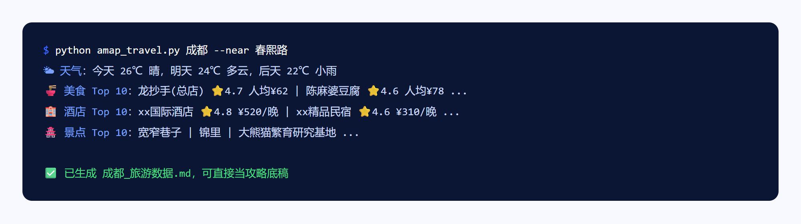

输入一个城市，自动拉取天气 + 美食 + 酒店 + 景点，一键存成攻略草稿，省掉手动一个个查的时间。
为什么做、怎么取舍、做完带来什么。
每次旅游前都要分别搜天气、美食、酒店、景点四个信息源，手动整理成一份攻略底稿。这段纯体力活可以自动化。
用高德开放平台的 Web 服务 API，一次调用拉齐天气预报 + POI 搜索（美食/酒店/景点），支持 --near 按地标周边查、--top 控制每类返回数量。个人认证免费额度每天几千次，日常够用。
现在计划任何一次旅行，第一步就是跑一次这个脚本，几秒钟拿到一份可以直接编辑的 Markdown 底稿。
终端运行效果（示例数据）。
